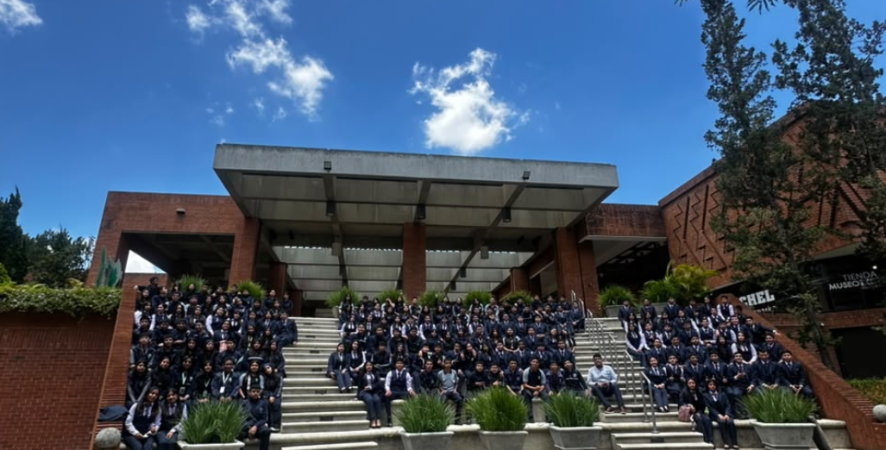

IPC
Instituto Profesional de Computación

ANUARIO DIGITAL 2026
Un espacio para conservar nuestra historia, nuestros rostros y los momentos que hicieron especial esta etapa.
Historia de la promoción
Tres años de aprendizajes, retos, amistades y momentos que nos llevaron hasta este día.
El camino que compartimos
Nuestra historia comenzó en 2024, cuando iniciamos 4to Perito en Administración de Empresas. Durante estos tres años crecimos como estudiantes y como personas, enfrentando nuevos retos, compartiendo experiencias y creando recuerdos que llevaremos con nosotros. En 2026, como 6to Perito en Administración de Empresas, culminamos esta etapa con la satisfacción de haber alcanzado nuestra meta y con la ilusión de comenzar un nuevo capítulo en nuestras vidas.
Nuestros docentes
Las personas que acompañaron nuestra formación durante esta etapa.
Nuestra promoción
Busca a un estudiante o selecciona un grado para conocer a sus integrantes.
Todos los estudiantes
Galería Fotográfica
Un recorrido por los momentos, experiencias y recuerdos que marcaron nuestra etapa como promoción.
Recuerdos que permanecen
Cada fotografía guarda un momento especial de nuestra historia. Desde los días de clase hasta las actividades y momentos compartidos, esta galería reúne los recuerdos que hicieron de estos años una etapa inolvidable.
Actividades destacadas
Aquí podrás registrar las actividades importantes de la promoción.
Logros
Reconocimientos, participaciones y logros que merecen quedar en nuestra historia.
Recuerdos de la promoción
Una sección para conservar anécdotas, frases y momentos que no queremos olvidar.
Muro de mensajes
Comparte felicitaciones, anécdotas y palabras de despedida. Los mensajes pasan por un filtro automático de lenguaje ofensivo.
Créditos del proyecto
Completa esta sección con los nombres de las personas que participaron en la creación del anuario.